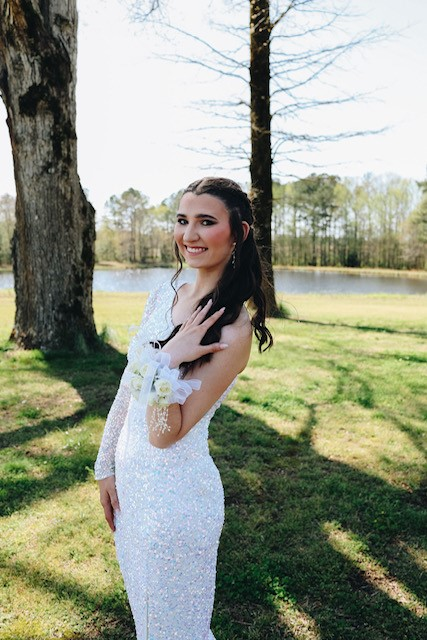
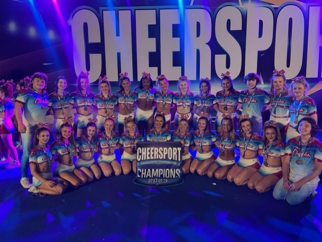
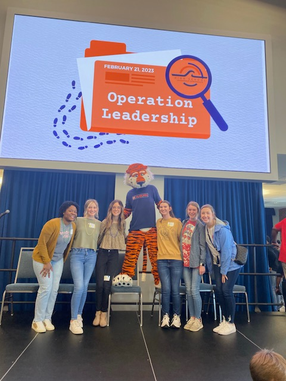
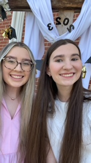

My name is Tori Dean, and I am still undecided about my major. I am from Talladega, AL, and I graduated Summa Cum Laude from Munford High School. ROAR LIONS! My mom is a kindergarten teacher and my dad is a supervisor at an industrial plant and assistant high school wrestling coach. My sister is attending Jacksonville State University and majoring in nursing. While in high school, I was a part of a competitive cheerleading team and a member and secretary of the Student Government. I am a member of Southside Baptist Church, which I have attended since I was little. Here at UNA, I am a member of the Honors College and have started going to the BCM. I also enjoy attending the different events on campus with my roommate.
I enjoy reading and listening to music. My favorite books include The Art of Racing in the Rain, The Hunger Games trilogy, If I Stay, and Two Summers. The top three genres I listen to are country, classical, and worship. My favorite sports to watch are gymnastics, cheerleading, and football. I also enjoy photography, although I'm not very good at it.
Fun Facts:
 ---------------------  ---------------------  --------------------- 
----------------------------- This is me. ----------------------------------------------------------------This is my cheer team. ----------------------- This is a picture from our SGA officer trip to Auburn. -------- This is my sister.